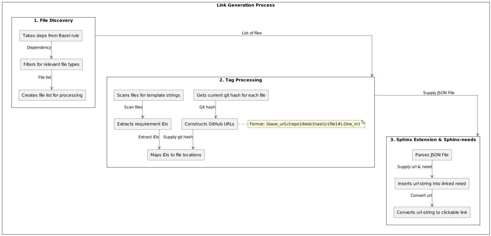

Source Link Extension Details#
A Sphinx extension for source code traceability for requirements. This extension works with the Bazel system and Sphinx-needs to provide automatic source code traceability. In a first step it parses the source code for requirement tags. All discovered tags including their file and line numbers are written in an intermediary file before the sphinx build. In a second step this intermediary file is parsed during sphinx build. If a requirement Id is found in the intermediary file a link to the source is added.
Implementation Components#
Bazel Integration#
The extension uses two main components to integrate with Bazel:
collect_source_filesProcesses all files from provided deps
Passes files as
--inputarguments toparse_source_files.pyHandles dependency tracking for incremental builds
parse_source_files.pyScans input files for template tags (e.g., “# req-traceability:”)
Retrieves git information (hash, file location)
Generates mapping file with requirement IDs and links
Link Generation Process#
File Discovery:
Takes deps from Bazel rule
Filters for relevant file types
Creates file list for processing
Tag Processing:
Scans files for template strings
Extracts requirement IDs
Maps IDs to file locations
Git Integration:
Gets current git hash for each file
Constructs GitHub URLs with format:
{base_url}/{repo}/blob/{hash}/{file}#L{line_nr}Note: The base_url is defined inparse_source_files.py. Currently set to:https://github.com/eclipse-score/score/blob/
Produces JSON mapping file: The strings are split here to not enable tracking by the source code linker.
[
{
"file": "src/implementation1.py",
"line": 3,
"tag":"#" + " req-Id:",
"need": "TREQ_ID_1",
"full_line": "#"+" req-Id: TREQ_ID_1"
},
{
"file": "src/implementation2.py",
"line": 3,
"tag":"#" + " req-Id:",
"need": "TREQ_ID_1",
"full_line": "#"+" req-Id: TREQ_ID_1"
},
]
Sphinx extension & Sphinx-needs:
Parses JSON file
Adds ‘url-string’ to needs
Converts ‘url-string’ to clickable link
An overview of the data flow inside the extension and it’s parts

Sphinx Integration#
The extension hooks into Sphinx’s build process. It attaches to the env-updated event.
Configuration Phase:
Registers as Sphinx extension
Reads mapping file
Sets up sphinx-needs integration
Build Phase:
Processes each need
Adds source_code_link option to matching needs
Handles needs_string_links conversion
Error Handling:
Validates requirement IDs
Provides descriptive warnings for missing IDs
Usage Guide#
Adding Places to Search#
You can easily add files to be searched by adding targets / files to the deps inside the
collect_source_files_for_score_source_code_linker in docs/BUILD.
See here:
collect_source_files_for_score_source_code_linker(
name = "collected_files_for_score_source_code_linker",
deps = [
":score_metamodel",
":score_source_code_linker",
# Add targets to be parsed here
],
)
Quickly Finding Source Links#
The easiest and quickest way to find source_code_link options is to just search for the option source_code_link. It should give you all rst files
where the option is not empty.
Executing Tests#
If you want to specifically execute the test suite for the extension please use the following command:
bazel test //docs:score_source_code_link_tests
The test suite should also run if you run all tests via bazel test //...
Known Limitations#
Esbonio Compatibility:
Does not work with Language Server
Skipped for performance reasons in instant feedback mode
Local Development:
Links to unpushed commits return 404
Links still generated but non-functional until push
Build Process:
source_code_link not visible in raw RST
Requires full build cycle for link generation
Dependent on GitHub repository structure
Internal Architecture#
collect_source_files:Dependency management
File filtering
Build rule definition
parse_source_files.py:File parsing
Git integration
Link generation
source_linkextension:Sphinx integration
Need modification
Tests are inside the source_link/tests